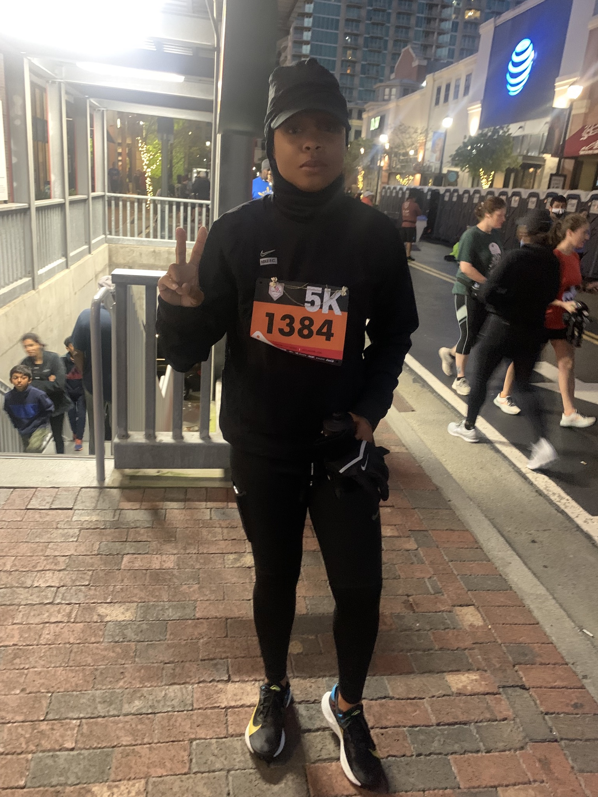

Running

What made me become a runner
When I was a kid I would literally always run. My family would always tell me "Michelle!! please stop running before you hurt yourself, just walk". When I turned 5 years old is my mom put me in track and field. I went on the run AAU track and field every summer. Once I got into highschool, I began placing at state levels and even got full ride scholarships for college. Fast-forward to today I still love running on a competitive level. I have 3 full marathons under my belt and I'm training for my 4th one. Running is my peace.